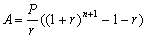

零存整付計算
更新日期: 2014年8月31日
程式可以計算零存整付問題，假定利息每月計算及息率固定不變，程式可以計算以下問題:
˙本利和 (已知每月存款，年利率及存款期數)
˙每月存款 (已知本利和，年利率及存款期數)
˙存款期數 (已知本利和，每月存款及年利率)
參考公式:

(A為本利和，P為每月存款及 r 為每月利率 (即年利率÷12))
程式 (78 bytes)
ClrMemory: 1200→X: ?→A: ?→B: ?→C: ?→D:
1 + C÷X→Y: A=0 => BXYC-1(Y^( D ) - 1◢
D => AC ÷ ( XY(Y^( D ) - 1◢
log( Y, 1 + AC ÷ (XBY
註: 如果是使用fx-3650P II或fx-50FH II，上述程式中紫色的開括號 ( 可以省略，程式長度可減1 byte。
例題1: 每月存款3000元，年利率為4%，預計存款24個月，求本利和。
按 Prog 1 再按 EXE (不輸入數值代表計算本利和)
3000 EXE (每月存款)
4 EXE (年利率)
24 EXE (存款期數，顯示本利和為 $75078.09)
計算完結按 AC 終止程式
例題2: 已知本利和為$75078.09，年利率為4%，存款期為24月，求每月存款。
按 Prog 1 再按 75078.09 EXE (本利和)
EXE (不輸入數值代表計算每月存款)
4 EXE (年利率)
24 EXE (存款期數，顯示每存款為 $3000)
計算完結按 AC 終止程式
例題3: 已知本利和為$75078.09，每月存款3000元，年利率為4%，求存款期數。
按 Prog 1 再按 75078.09 EXE (本利和)
3000 EXE (每月存款)
4 EXE (年利率)
EXE (不輸入數值代表計算存款期數，顯示存款期數為24月)
返回 CASIO fx-50FH、fx-3650P II、fx-50FH II及fx-50F PLUS 程式集